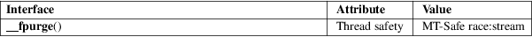

fpurge, __fpurge − purge a stream
Standard C library (libc, −lc)
/* unsupported
*/
#include <stdio.h>
int fpurge(FILE *stream);
/* supported */
#include <stdio.h>
#include <stdio_ext.h>
void __fpurge(FILE *stream);
The function fpurge() clears the buffers of the given stream. For output streams this discards any unwritten output. For input streams this discards any input read from the underlying object but not yet obtained via getc(3); this includes any text pushed back via ungetc(3). See also fflush(3).
The function __fpurge() does precisely the same, but without returning a value.
Upon successful completion fpurge() returns 0. On error, it returns −1 and sets errno to indicate the error.
|
EBADF |
stream is not an open stream. |
For an explanation of the terms used in this section, see attributes(7).

None.
fpurge()
4.4BSD. Not available under Linux.
__fpurge()
Solaris, glibc 2.1.95.
Usually it is a mistake to want to discard input buffers.
fflush(3), setbuf(3), stdio_ext(3)